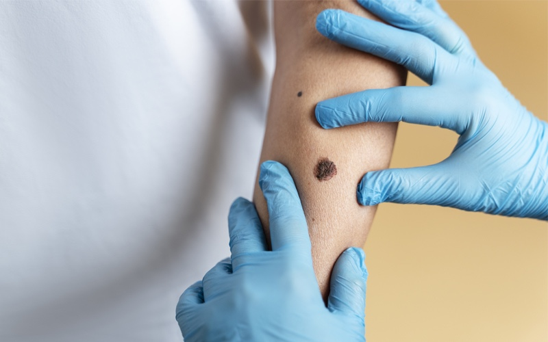
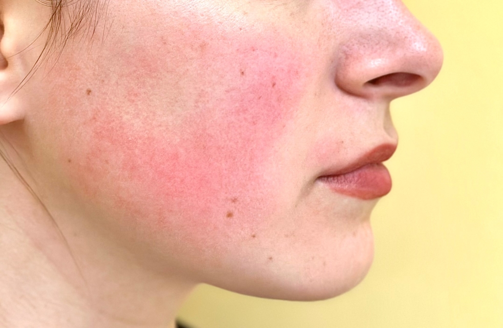

Enfermedades
Cáncer de piel (melanoma)
El cáncer de piel ocurre cuando las células anormales de la epidermis, la capa más externa de la piel, comienzan a crecer de manera descontrolada debido a daños no reparados en el ADN, provocando mutaciones. Estas mutaciones hacen que las células de la piel se multipliquen rápidamente, dando lugar a tumores malignos. Los rayos ultravioleta son la principal causa del cáncer de piel, ya que la exposición prolongada al sol puede dañar el ácido nucleico y provocar la ruptura de cadenas simples y dobles que afectan la producción de ADN, por consecuencia división celular.
Los principales tipos de cáncer de piel son carcinoma de células basales, carcinoma de células escamosas (CCS), melanoma y carcinoma de células de Merkel (MCC)(La Fundación del Cáncer de Piel, 2024).
El cáncer suele aparecer en las áreas de la piel que están más expuestas al sol, como el cuero cabelludo, la cara, los labios, las orejas, el cuello, el pecho, los brazos y las manos, y en las mujeres, también en las piernas. Sin embargo, también puede desarrollarse en zonas que rara vez están expuestas a la luz solar, como las palmas de las manos, debajo de las uñas de las manos o de los pies, y en la zona genital(Mayo Clinic, 2022).

Hiperpigmentación
La hiperpigmentación ocurre cuando la piel produce un exceso de melanina, el pigmento que determina el color de la piel. Como resultado, aparecen manchas o zonas en la piel que son más oscuras que el resto y es más común en mujeres que en hombres (Miiskin, s.f.).
Entre sus causas principales está la exposición solar, cambios hormonales, la edad y medicamentos (Martínez, 2023).
En la siguiente tabla se presentan los tipos de hiperpigmentación más comunes
Rosácea
La rosácea es una enfermedad cutánea crónica que se caracteriza por un enrojecimiento facial persistente, junto a la presencia de bultos pequeños que contienen pus y vasos sanguíneos dilatados. Afecta principalmente la zona central del rostro, incluyendo las mejillas, la nariz, la frente y el mentón. Esta condición es más común en mujeres y personas de piel clara, especialmente en edades entre los 30 y 50 años. Aunque su causa exacta es desconocida, se cree que factores genéticos, ambientales y una respuesta inmunitaria anormal pueden influir en su desarrollo.
La exposición al sol, así como otros factores desencadenantes como el estrés, el consumo de alcohol, alimentos picantes y bebidas calientes, pueden agravar los síntomas. Estos incluyen erupciones, ardor, sensación de pinchazos, picazón, enrojecimiento e incluso engrosamiento de la piel (Mayo Clinic, 2023).
